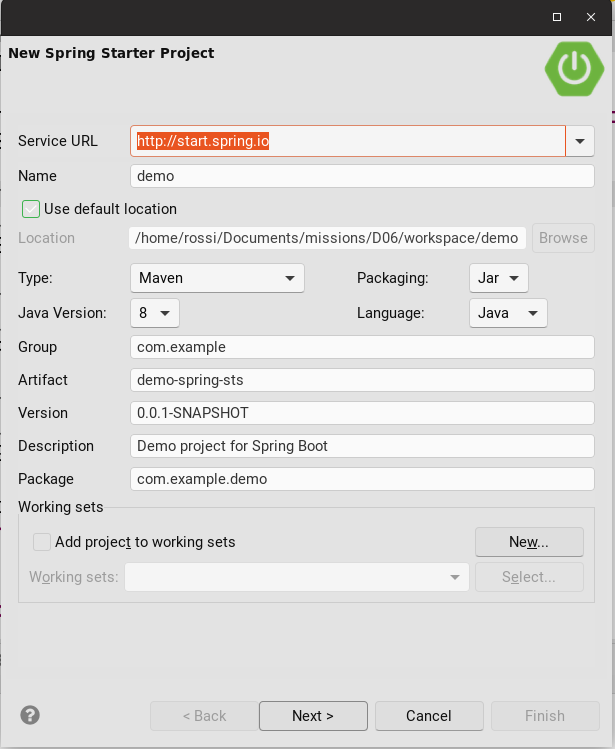

Créer un projet Spring Boot
A la main avec Maven
Deux options :
- Option 1 : Définir un projet parent
spring-boot-starter-parent
<parent>
<groupId>org.springframework.boot</groupId>
<artifactId>spring-boot-starter-parent</artifactId>
<version>${spring-boot.version}</version>
</parent>
- Option 2 : Une dépendance en scope
import::
<dependencyManagement>
<dependencies>
<dependency>
<groupId>org.springframework.boot</groupId>
<artifactId>spring-boot-dependencies</artifactId>
<version>${spring-boot.version}</version>
<type>pom</type>
<scope>import</scope>
</dependency>
</dependencies>
</dependencyManagement>
Pour créer une application Web, ajouter une dépendance vers le projet spring-boot-starter-web.
<dependencies>
<dependency>
<groupId>org.springframework.boot</groupId>
<artifactId>spring-boot-starter-web</artifactId>
</dependency>
</dependencies>
En ligne
Via le site : https://start.spring.io/

Via des IDE
Spring Tool Suite : File > New > Spring Starter Project.
